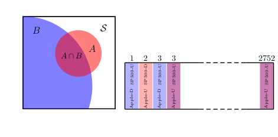
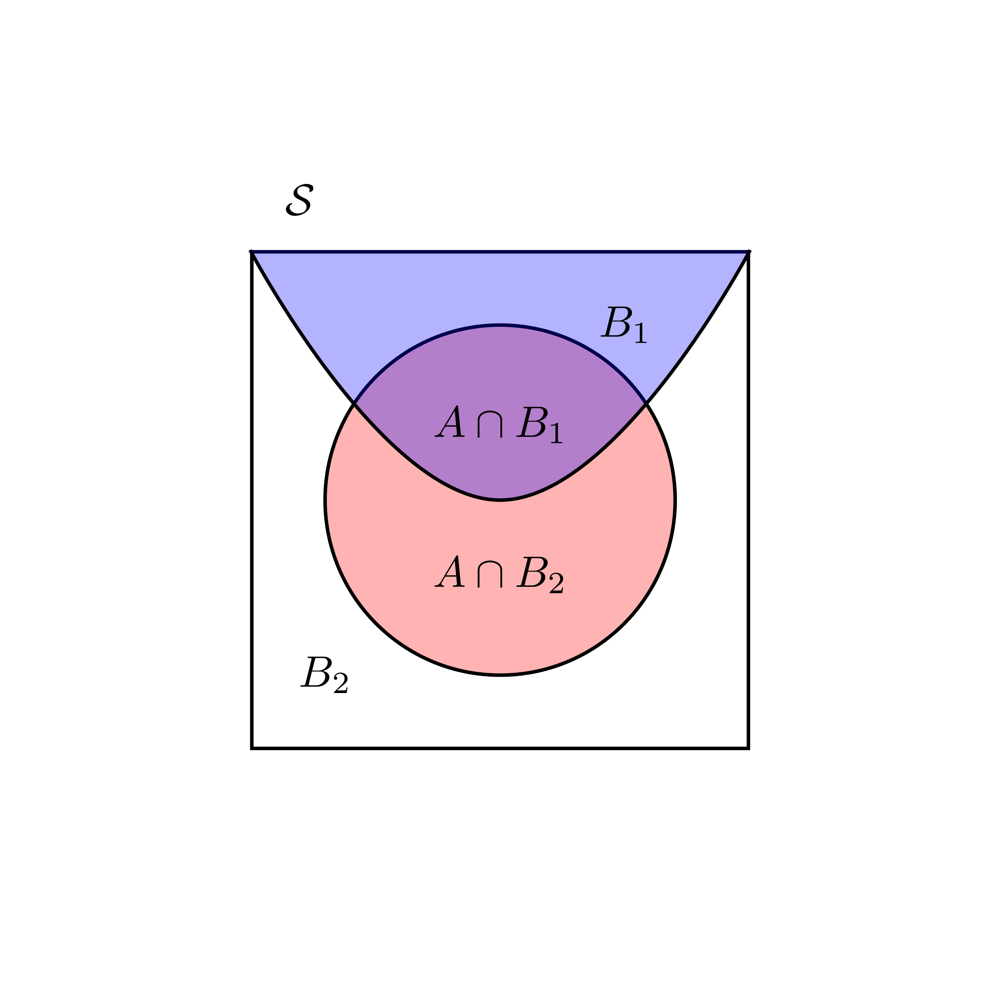
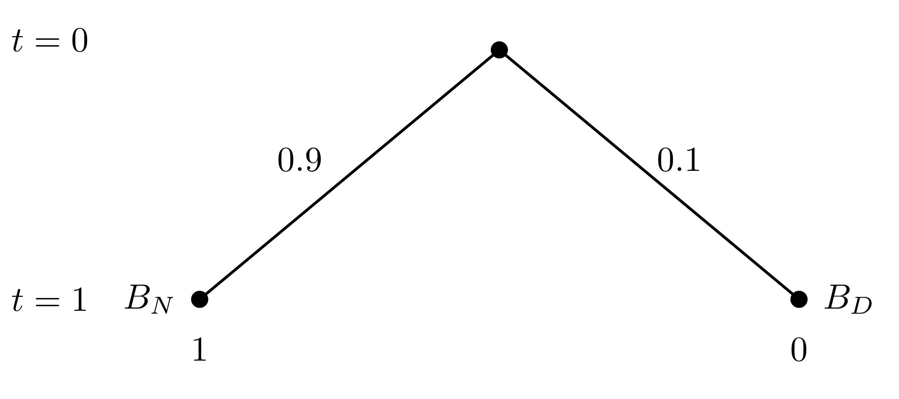
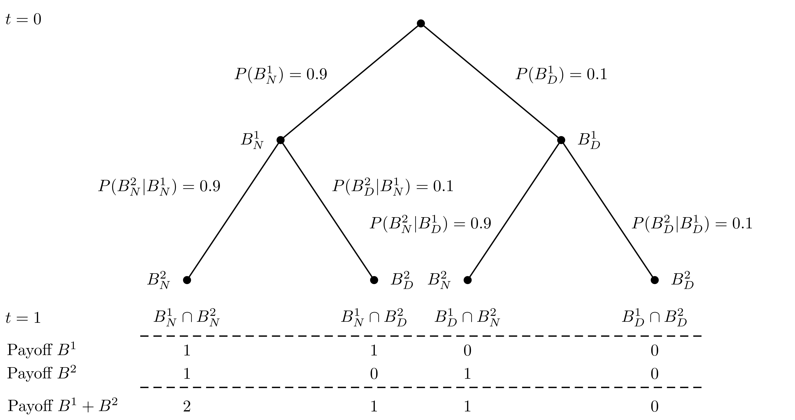
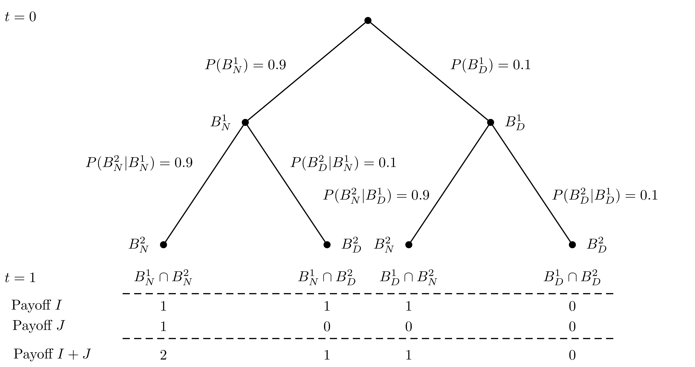
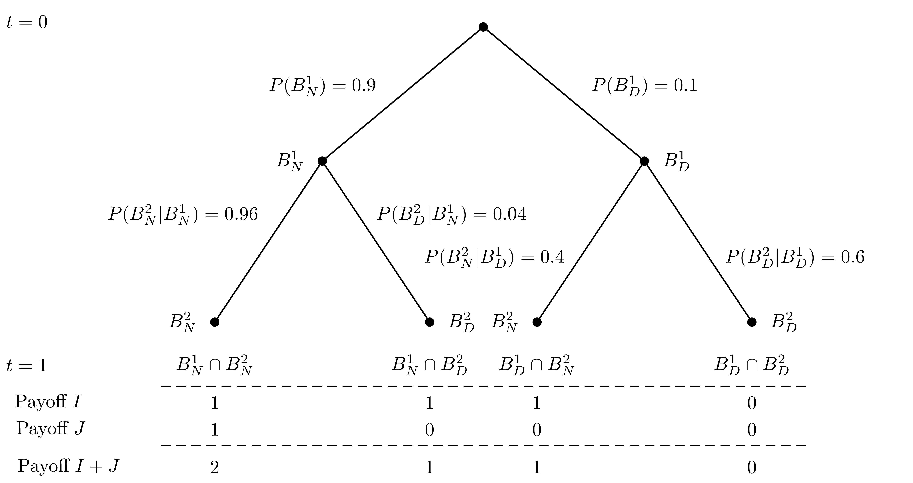
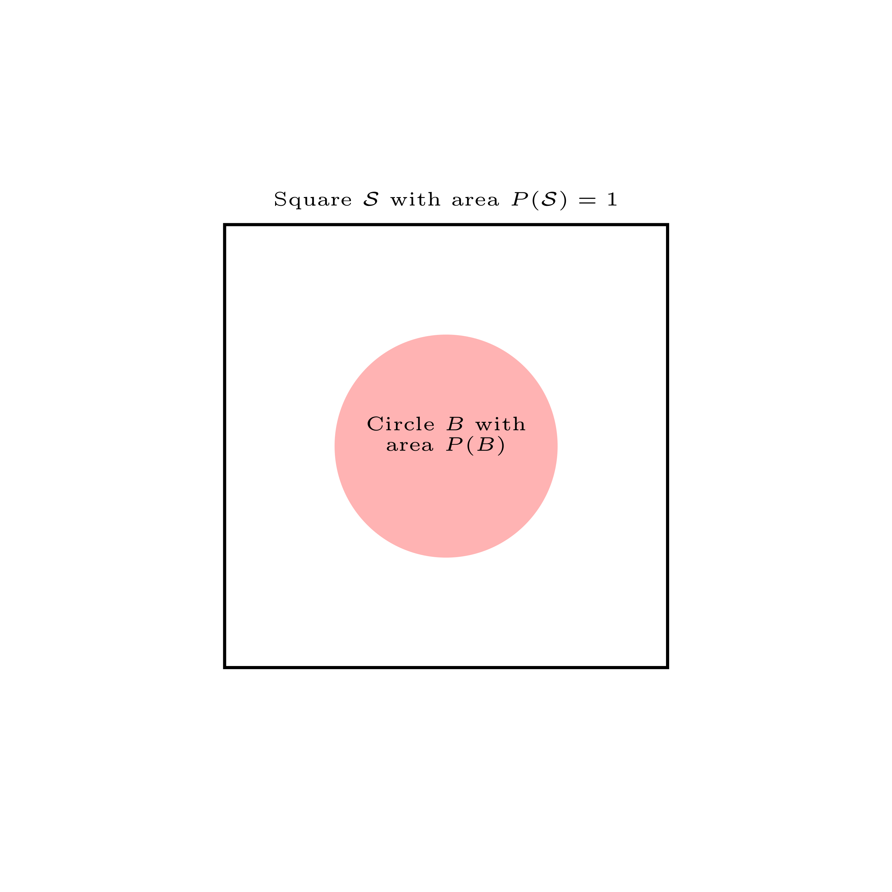
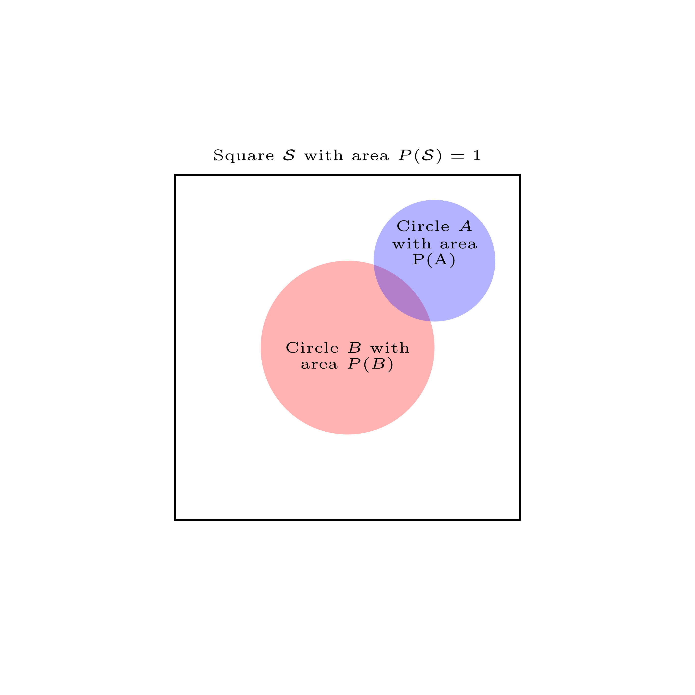
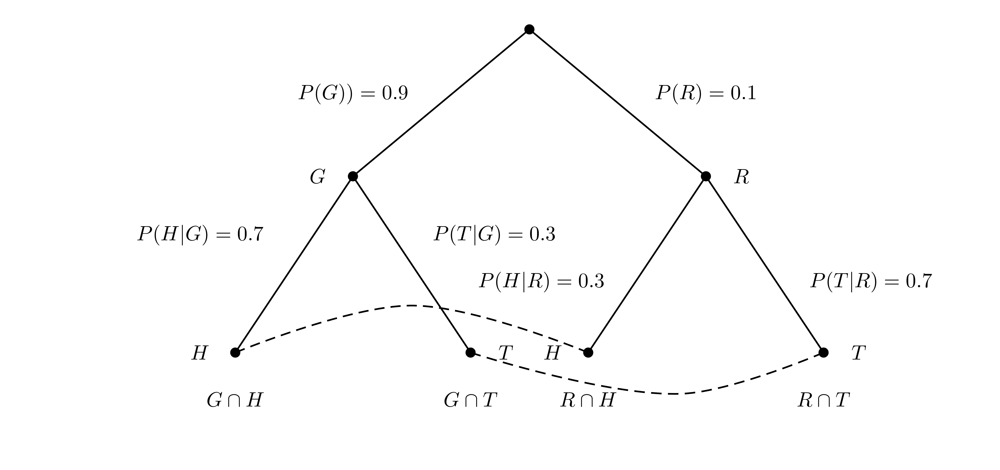

Chapter 3 Conditional Probability
3.1 Contingency tables
We begin this lecture with a definition and an example. Here is the definition:
- Contingency Table
- A contingency table shows counts of cases on one categorical variable contingent on the value of another for every combination of both variables.
Contingency tables are useful for calculating conditional probabilities as they contain all the necessary ingredients for the computation. The concept of conditional probability and its applications will be the main contents of this lecture.
Let us start with an example of a contingency table within the context
of stock price moves, we discussed already to some
degree in lecture 2. It gives me also an opportunity to point you to one
powerful R package, which will allow you to access financial data, quite easily for
yourself without me providing them to you with study material: The
tidyquant-package. You can check out the packages’s home page with documentation and
study material at: https://business-science.github.io/tidyquant/.
Remember from lecture 1 that we can install add-on packages for R, which extend the
functionality of the system by new functions. A packages has to be installed first and then
loaded into working memory. To install tidyquant let us first use the install command:
install.packages("tidyquant")
and then load the package by library(tidyquant):
We do not go into the tidyquant package in any detail. If you are interested check out the github page cited above. For now we only show the use of one of its core functions which allows you to load financial data directly from the internet.
This function is called tq_get(). Let’s see how it works. We first
retrieve the S&P500 stock market index. To do this we need to know the ticker symbol, which is
^GSPC. This has to be passed to the tq_get() function and that’s it. Let us save these
data into an R object, which I call sp500and look at the first entries
sp500 <- tq_get("^GSPC", from = " 2011-01-03")
head(sp500, n = 5)## # A tibble: 5 x 8
## symbol date open high low close volume adjusted
## <chr> <date> <dbl> <dbl> <dbl> <dbl> <dbl> <dbl>
## 1 ^GSPC 2011-01-03 1258. 1276. 1258. 1272. 4286670000 1272.
## 2 ^GSPC 2011-01-04 1273. 1274. 1263. 1270. 4796420000 1270.
## 3 ^GSPC 2011-01-05 1269. 1278. 1265. 1277. 4764920000 1277.
## 4 ^GSPC 2011-01-06 1276. 1278. 1270. 1274. 4844100000 1274.
## 5 ^GSPC 2011-01-07 1274. 1277. 1262. 1272. 4963110000 1272.We see that the series starts March 2011. Now let’s retrieve the stock price data of Apple beginning at 2011-01-03, the same day as the index data.
apple <- tq_get("AAPL", from = " 2011-01-03")You can give a beginning date to the argument from in the tq_get() function (you can guess
that you can also give an end data to as an argument to tq_get)
For the contingency table we would like to count the number of days when the S&P was moving up from one day to the next and how often it was moving down. We would like to do the same with the Apple stock price.
One way to see whether the price moved up or down from one day to the next is to compute the daily price differences in the closing price. When this difference is positive the price made an up movement, when it is negative, it made a down movement (it could theoretically also not change at all).
There are many ways to implement such a computation in R. Let me remind
you of the diff() function, we already used in lecture 2. It implements a method for
computing differences in time series. Consider the following example: Say we have
a vector of values like
val <- c(2,4,7,1,9,10)and we apply the diff()function we will get
diff(val)## [1] 2 3 -6 8 1Now, of course by taking differences between 4 and 2, 7 and 4, 1 and 7, 9 and 1, ans 10 and 9 we
have to drop the first observation and get a vector which is shorter than val by one component.
We can
produce a vector of equal length if we add as the first component the value NA, which is
R’s symbol of “not available” or of a missing value. Indeed this makes sense because for the
first date if you want we have no value for the change (since we cut off there and don’t know
the value from the day before).
Now let us apply this reasoning to the Standard and Poors 500: The data of the index are in a
data frame. We can add a column to this data frame by the $ symbol followed by the
column name. This
symbol will append a new column with the name we write after $. Let us call this new
column “changes” and compute the changes in the closing price by the diff()function.
Now, since we loose the first value here by taking the first difference, let us
replace it by NA and from a new column of price differences with the first observation
replace by NA. Thus we type:
sp500$changes <- c(NA, diff(sp500$close))Lets do the same for the Apple stock price.
apple$changes <- c(NA, diff(apple$close))Let me use this opportunity to introduce you to how R treats missing information. This is a situation you will encounter all over in applied work with data in gerneral and with financial data in particular.
The NA character is a special symbol in R standing for “not available.” It can be used as
a placeholder for missing information, just as we did before, where we inserted NA in the
column of price changes for the first record, where we could no compute the difference, since
we had no information on the price the day before our dta set starts. NA is treated by R
exactly as you would expect that missing information should be treated. If oyu use it in
arithmetic operations or in comparisons, you will be returned NA.
NA prevents oyu from mistakes made due to missing information. It can also
create practical problems. If you would for instance try to compute the
average price change of the apple
stock price
mean(apple$changes)## [1] NAThis is, of course, annoying. Just because there is one NA at the beginning of more than 2700
records, you should still be able to compute the mean. You just need to drop the NA. R has
an argument to most statistical functions, which allow you to drop the NA before you do the
computation, na.rm. When we set this argument to TRUE (or equivalently T), R is able
to do the computation:
mean(apple$changes, na.rm = T)## [1] 0.05784336Occasionally, you also want to identify or count the NA in your data with a logical test. For
this purpose R provides a special function is.na(). This function takes a value and checks
whether it is an NA. Say, for example, we have the vector:
vec <- c(1, NA, 2, 3, NA)and then apply:
is.na(vec)## [1] FALSE TRUE FALSE FALSE TRUEwe get a vector of logical values. This vector would allow us then, by R’s subsetting rules, to
select the non-NA values. We just tell R to select all elements from vec which are not NA:
vec[!is.na(vec)]## [1] 1 2 3This end our short digression into the treatment of missing information in R.
Let us now count the up moves and the down moves. Since there are only these two outcomes it is sufficient if we add a logical column to both dataframes, checking the condition that the change variable is larger than zero (note that with this test we automatically would count the possible cases where the stock price remains unchanged to the down movements).
sp500$up <- (sp500$changes > 0)
apple$up <- (apple$changes > 0)We can now tabulate the joint up and down moves using the table()function. We give the
dnnargument to the function, sow we can see which are the dimensions in the table computation
R is performing for us. We also add the marginal sums by giving the output of the
tablefunction to the addmargins() function of R:
addmargins(table(sp500$up, apple$up, dnn = c("SP500", "Apple")))## Apple
## SP500 FALSE TRUE Sum
## FALSE 870 379 1249
## TRUE 443 1081 1524
## Sum 1313 1460 2773From this table you can read the total number of cases where it is true that the SP500 index and the Apple stock price move up together, the number of cases when they fall together as well as the number of cases where they move in opposite directions. The last row and the last column contain the row and column sums of all these cases.
So now we have used R to create a contingency table we can touch from our abstract definition we gave in the beginning. On the way you deepened and fortified your knowledge of R a bit further.
3.2 Marginal, joint and conditional probability
- Marginal probability
- The marginal probability is the unconditional probability of an event. This probability is not conditioned on any other event. In terms of notation, we denote the marginal probabilities of two arbitrary events \(A\) and \(B\) by \(P(A)\) and \(P(B)\) respectively.
- Joint probability
- The joint probability is the probability of simultaneous events. This is the probability of the intersection of two or more events. If \(A\) and \(B\) are arbitrary events, we write \(P(A \cap B)\).
- Conditional probability
- The conditional probability is the probability of an event given that some other event has occurred. The information from the event that has occurred can influence the probability of the original event. The following notation is used for conditional probabilities: For two events \(A\) and \(B\), the conditional probability of \(A\) given \(B\) is denoted by \(P(A\,|\,B)\) and the conditional probability of \(B\) given \(A\) is denoted as \(P(B\, |\, A)\). In general these two conditional probabilities are not the same.
The table of joint moves, we have computed before can help us to illustrate
these concepts using the frequency interpretation of probability: We divide
each entry in our table by the total number of cases. Of course this is so frequent
a case in applied data analysis that R has a function for it, the prop.table() function:
prop_table <- addmargins(prop.table(table(sp500$up, apple$up, dnn = c("SP500", "Apple"))))
prop_table## Apple
## SP500 FALSE TRUE Sum
## FALSE 0.3137396 0.1366751 0.4504147
## TRUE 0.1597548 0.3898305 0.5495853
## Sum 0.4734944 0.5265056 1.0000000The marginal probability that the SP500 will make an Up move is: \[\begin{equation*} P(\text{SP500-Up} \cap \text{Apple-Down}) + P(\text{SP500-Up} \cap \text{Apple-up}) = P(\text{SP500-Up}) \end{equation*}\] which is
## [1] 0.55It is the sum of the two joint probabilities \(P(\text{SP500-Up} \cap \text{Apple-Down})\) and \(P(\text{SP500-Up} \cap \text{Apple-Up})\).
To compute the conditional probability that the stock price of Apple will make an up move given that the SP500 makes an up move we have to compute \(P(\text{Apple-Up} | \text{SP500-Up})\). The probability that the Apple price went up and the SP500 went up is \(P(\text{Apple-up} \cap \text{SP500-Up})\).
But given I already know that by the condition SP500 went up, I am in the second line of my table and we know that the first line, SP500 went down - is ruled out by the condition.
We thus have now a new sample space and we must adjust the probabilities proportionally to be consistent with the rules of probability. We therefore have to divide by \(P(\text{SP500-Up})\) to get the formula \[\begin{equation*} P(\text{Apple-Up} | \text{SP500-Up}) = \frac{P(\text{Apple-up} \cap \text{SP500-Up})}{P(\text{SP500-Up})} \end{equation*}\] which is:
## [1] 0.71To check whether we have made the correct re-normalisation you can ask yourself: Given the rules of probability, what is \(P(\text{Apple-Down} | \text{SP500-Up}))\) ? It should be 1 minus the conditional probability that it goes up given the sp500 index goes up, which is
## [1] 0.29Applying the formula for conditional probability we would compute \[\begin{equation*} P(\text{Apple-Down} | \text{SP500-Up}) = \frac{P(\text{Apple-Down} \cap \text{SP500-Up})}{P(\text{SP500-Up})} \end{equation*}\] which is indeed
## [1] 0.29Another way to think about this formula can perhaps help to foster our intuition if we look at this problem through the frequency interpretation of probability:
We would like to find the conditional probability that Apple makes an up move given that SP500 makes an up move. Suppose the daily price moves are a conceptual random experiment with the outcomes that the price can either move up or down and we have two prices SP500 and Apple, so our sample space has four possible outcomes: \({\cal S} = \{ UU, UD, DU, DD \}\) where the first character if it is U means SP500-Up and the second if it is U means Apple-Up and so on for all possible combinations. We repeat this experiment 2752 times and keep a notebook where at every repetition we write down the number of the experiment, the outcome and then we note whether both Apple and the SP500 went up.
| notebook line | outcome | SP500-Up and Apple-Up ? |
|---|---|---|
| 1 | SP500-Up, Apple-Down | No |
| 2 | SP500-Down, Apple-Up | No |
| 3 | SP500-Up, Apple-Down | No |
| 4 | SP500-Up, Apple-Up | Yes |
| . | . | . |
| . | . | . |
| . | . | . |
| 2752 | SP500-Up, Apple-Up | Yes |
To get the conditional probability of a Apple-Up given an SP500-Up we have to count the Google-Ups among the notebook lines where the SP500 has an Up move and divide by the number of these SP500-Up lines.
Let’s do this in R. To create the notebook we make a data frame where one column is the Up column
of the SP500 data and the second columns is the Up column of the Apple data. We remove
all NA in the data frame: This is achieved by applying the function na.omit()to the data
frame. It will remove all NA.
This provides a nice opportunity to introduce you to a very useful operator, which is
included in base R and which is called the pipe. It is available, since R version 4.1.0 and
it’s symbol is |>. It allows you to make code in which several functions are nested
more readable. The way it works is that you can use the pipe to send a line of code or the
output of a fucntion as input to another function. In our case we would first create a data frame
and then pipe the frame to na.omit() to finally save it in an object we call joint_ups:
joint_ups <- data.frame(SP500Up = sp500$up, AppleUp = apple$up) |>
na.omit()Before R 4.1.0 there was a pipe operator with this functionality available through the magittr package, where it had the symbol %>%. When you work with R you will encounter this version of
the pipe sooner or later.
Now we apply what we have already learned about referencing values in a data frame in R to select all the row numbers in our fictitious notebook where the SP500 moves Up and look at the first rows:
sel_joint <- joint_ups[joint_ups$SP500Up == TRUE, ]
head(sel_joint, n = 5)## SP500Up AppleUp
## 3 TRUE TRUE
## 7 TRUE FALSE
## 8 TRUE TRUE
## 10 TRUE TRUE
## 11 TRUE FALSETo count the number of rows we can use the nrow() function.
dim(sel_joint)## [1] 1524 2It says that the number of notebook lines where the SP500 makes an Up move. The result should not surprise us, for we already derived it using the contingency table.
Now, let us count the Ups in the Apple occurring simultaneously with the SP500 ups. Here we
use the logical operator & which is R’s syntax for the set symbol \(\cap\):
joint_ups$simultaneous = (joint_ups$SP500Up & joint_ups$AppleUp)Now we can make use of R’s precedence rules to count the simultaneous up moves
sum(joint_ups$simultaneous)## [1] 1081Now we compute the relative frequency of joint up moves among all the lines where the SP500 moves up, which is
## [1] 0.71
Figure 3.1: A Visualization of conditional probability
On the left you see the sample space symbolized as a square and the area of event \(B\), SP500-up, is the proportion of the whole sample space taken up by this event, whereas event \(A\), Apple-up is the proportion of the whole sample space taken up by this event. When it is known that \(B\) has occurred, the sample space changes and the event that both, SP500-up and Apple-up is in the intersection of both areas and the conditional probability is the area of this intersection as a proportion of \(B\). On the right you see a picture of our notebook metaphor using the same color codes. The conditional probability is the ratio of all violet stripes as a proportion of all blue stripes.
We now can give the
- Formal definition of conditional probability
- Let \(A\) and \(B\) be given events. We define the conditional probability of \(A\) given \(B\) as \[\begin{equation*} P(A\,|\,B) = \frac{P(A \cap B)}{P(B)}\,\,\, \text{provided}\,\,\, B \neq 0 \end{equation*}\]
Note that for conditional probabilities we have for two events \(A\) and \(B\), that \(P(A|B) \neq P(B|A)\). To see this assume that \(P(A) \neq P(B)\) and \(P(A) \neq 0\) and \(P(B)\neq 0\).
We then get: \[\begin{equation*} P(A|B) = \frac{P(A\cap B)}{P(B)} = \frac{P(B \cap A)}{P(B)} \end{equation*}\] since \(P(A \cap B) = P(B \cap A)\). It follows that \[\begin{equation*} \frac{P(B \cap A)}{P(B)} \neq \frac{P(B \cap A)}{P(A)} = P(B|A) \end{equation*}\] since we have assumed that \(P(A) \neq P(B)\). Therefore \(P(A|B) \neq P(B|A)\). You can check this with the stock example, we discussed before.
3.3 The multiplication rule
The following formula is often called the multiplication rule and is just a rewritten form of the definition of conditional probability.
- Multiplication rule
- Given events \(A\) and \(B\) it holds that \[\begin{equation*} P(A \cap B) = P(A | B)\times P(B) \end{equation*}\]
The multiplication rule can give us a deeper insight into the notion of independence, we discussed earlier. Remember that two events \(A\) and \(B\) are independent if \(P(A \cap B) = P(B \cap A) = P(A) \times P(B)\).
If we combine this rule with the concept of conditional probability, we see that if two events \(A\) and \(B\) are independent, then \[\begin{equation*} P(A|B) = \frac{P(A \cap B)}{P(B)} = \frac{P(A) \times P(B)}{P(B)} = P(A) \end{equation*}\] and \[\begin{equation*} P(B|A) = \frac{P(B \cap A)}{P(A)} = \frac{P(A) \times P(B)}{P(A)} = P(B) \end{equation*}\]
This formula says that if two events are independent the probability of \(A\) is not influenced by the event \(B\) occurring and the probability of event \(B\) is not influenced by the event \(A\) occurring.
3.4 Law of total probability
The multiplication rule implies a further rule, which is often called the law of total probability in the literature. We state the law for a simple case for two disjoint events, which can be generalized in a straightforward way to \(N\) disjoint events.
- Law of total probability
- Suppose the sample space \({\cal S }\) is divided into two disjoint events \(B_1\) and \(B_2\),
which cover the sample space then
for any event \(A\) we have
\[\begin{align}
P(A)&= P(A\cap B_1) + P(A\cap B_2)\\
&=P(A|B_1)P(B_1) + P(A|B_2)P(B_2)
\end{align}\]
Such covers of disjoint sets are called a partition of the sample space. It can
abstractly be visualized as
follows:
Note that in this picture \(B_1 \cap B_2 = \emptyset\) and \(B_1 \cup B_2 = {\cal S}\), hence \(B_1\) and \(B_2\) form a partition of the sample space. The probability of \(A\), the red set can then be determined by the law of total probability.

Figure 3.2: A Visualization of total probability
As an example, consider a stock analysis problem, where you learn that a company is planning to launch a new project that is likely to affect the companies stock price. There is a \(60 \%\) probability that a project will be launched. If this happens there is \(75 \%\) probability that the stock price will increase. In case the project is not launced this probability is only \(30 \%\).
You might think of this situation in terms of a contingency table:
| Launch Project | Don’t Launch Project | ||
|---|---|---|---|
| Stock price rise | 0.45 | 0.12 | 0.57 |
| Stock price not rising | 0.15 | 0.28 | 0.43 |
| Total | 0.6 | 0.4 | 1 |
Say we want to assess the probability that the stock price will rise, given these data. Then we can apply the law of total probability is: \(0.45 + 0.12 = 0.57\).
3.5 Example: Independence and the Financial Crisis of 2007-2008
In this example, we will go back to the financial crisis of 2007-2008, in which the global financial system almost completely collapsed. While the history of the crisis as well as the institutional details of structured Finance are very complicated, a conceptual root problem of structured finance and the crisis has a lot to do with conditional probabilities. Let’s see why.
To set the stage we need some background from Finance first. We begin with the definition of a bond.
- Bond, face value, par value
- A bond is an obligation be a bond issuer to pay money to the bond-holder according to the rules specified at the time the bond is issued. Generally, a bond pays a specific amount, its face value or equivalently its par value at the date of maturity.
Bonds are the biggest and most liquid class of fixed-income securities and have tremendous practical importance as investment vehicles. The details are very involved and we ignore them here.
Although bonds offer a fixed-income stream, they are subject to default, if the issuer has financial difficulties or gets into bankruptcy. So there is a certain credit risk in bonds.
To characterize the nature of these risks bonds are usually rated by rating organisations. The two primary ratings are issued and published by Moody’s and Standard and Poor’s.
Bonds that are either high or medium grade are considered to be investment grade. Bonds that are below the speculative category are often called junk bonds. The rating is usually based on a statistical analysis of various financial ratios of the issuer, such as leverage, debt to equity, cash fow to outstanding debt etc. Bonds with a lower rating will have a higher probability of default and a lower price than a comparable bond with a higher rating. The following table shows the rating schemes of Moody’s and Standard and Poor’s.
| Moody’s | Standard & Poor’s | |
|---|---|---|
| High grade | Aaa | AAA |
| Aa | AA | |
| Medium grade | A | A |
| Baa | BBB | |
| Speculative grade | Ba | BB |
| B | B | |
| Default Danger | Caa | CCC |
| Ca | CC | |
| C | C | |
| D |
In the early 2000’s financial innovations came to the market that proposed the practice of pooling and tranching bonds to transform the risks of junk bonds in a way that some good risks. An important asset class created by these financial engineering techniques were mortgage backed securities.
Let us explain the idea. Let’s imagine a bond that is issued today - at \(t = 0\) and matures in a year from now, tomorrow, at \(t = 1\). It pays off \(1\) euro at maturity, but there is a certain risk of a default, in which case it pays nothing or \(0\).
You might imagine this bond as an event tree. Since it is a junk bond, this default happens with probability \(P(\text{default}) = 0.1\).
Figure 3.3: A simple event tree for a defaultable bond

Figure 3.4: An event tree for two defaultable bond with independent defaut probabilities
The tree is interpreted as follows: Each dot is called a node. The tree is organized by levels, the top node or root being level 0. The next layer is layer 1 and so on. The tree might symbolize a sequence with one layer happening before the other, or here in our case a simultaneous event of two bonds reaching their state at \(t=1\).
Probabilities are written along the edges of the tree. The probability of \(B^1_N\) - the probability that the first bond dies not default - is \(0.9\). It is written on the edge from the root to the node labeled \(B^1_N\). At the next level we put the conditional probabilities. The edge from \(B^1_N\) to \(B^2_N\) is \(P(B^2_N\,|\, B^1_N)\). By the multiplication rule the probability of getting to any node is just the product of the probabilities along the edges. \[\begin{equation*} P(B^1_N \cap B^2_N) = P(B^1_N) \times P(B^2_N\,|\, B^1_N) \end{equation*}\] Now if we assume that the risks are independent this would just be \[\begin{equation*} P(B^1_N \cap B^2_N) = P(B^1_N) \times P(B^2_N) = 0.9 \times 0.9 = 0.81 \end{equation*}\] You can work out all the other probabilities now for yourself. At the end nodes of the tree, I have written the event symbolized by the end node in set notation. Between the dashed lines you can read off the payoffs of the two bonds if we go along the edges of the particular path below the end nodes. The payoff of \(B^1\) is written above the payoff of \(B^2\). Below the lower dashed line I have written the aggregate payoff of both bonds or the sum of their individual payoffs.
The law of total probability can also be illustrated nicely in this tree picture. For example \(P(B^2_D)\) is just the sum of all probabilities of the paths, leading to \(B^2_D\) which is given the current tree just \(0.9 \times 0.1 + 0.1 \times 0.1 = 0.1\).
Some of you might have realized that the tree gives us an equivalent representation to what we would have got from a contingency table. To see this, look at:
| \(B^2_D\) | \(B^2_N\) | ||
|---|---|---|---|
| \(B^1_D\) | 0.01 | 0.09 | 0.1 |
| \(B^1_N\) | 0.09 | 0.81 | 0.9 |
| Total | 0.1 | 0.9 | 1 |

Figure 3.5: An event tree for two synthetic bonds built on the junk bonds \(B^1\) and \(B^2\) with independent defaut probabilities
What we see here is a slightly modified tree for the two new bonds \(I\) and \(J\). Their payoff is engineered from the underlying jung bonds \(B^1\) and \(B^2\). So \(I\) and \(J\)V get different payoff profiles but in such a way that they can be funded from the aggregate cash fow of both of the junk bonds. Note that below the dashed line you see that the sum of payoffs did no change. So when we pool the initial two junk bonds and tranch them into the two new payoff structures, we can fulfill all promises from the cash flow of the pool.
Here is the magic: \(I\) is a bond that pays in all states, except when both \(B^1\) and \(B^2\) default. Under the assumption of independence, the probability of such a state occurring is just \(0.01\). Thus, given the independence assumption both Moody’s and Standard and Poor’s could now grade the new bond as investment grade. The other bond \(J\) now never pays off except in the state where both \(B^1\) and \(B^2\) would both not default. It defaults, thus with probability \(0.99\). It has become toxic junk.
Thus here we have the magic of structured finance at work: We took junk plus junk and got investment grade and toxic junk. Now, note that this is toy example. But essentially this is what has been used in real life situations at an enourmous scale. This repackaging game was played as a trillion dollar business, mainly with mortgages but also with other security classes, like car loans, student loans and credit card debt. Special investment vehicles sponsored by banks would pool and tranch the various asset classes, rating agencies would rate them and investors hungry for safe investments would buy the synthetic investment grade bonds.
But what would happen, if independence does not hold and our risks are *dependent** instead? Contemplating this possibility is not very far fetched. After all, if a bond issuer comes into difficulties to fulfill his promise it is perhaps because of an event affecting other bond holders as well, like a macroeconomic recession, a global crisis like the current pandemic or the fact that the defaults creates problems for other bondholders who had relied on the promise of the bond issuer in trouble to make his contracted payments.
A situation like this could be captured perhaps by the following variation of our tree.
Figure 3.6: An event tree for two synthetic bonds built on the junk bonds \(B^1\) and \(B^2\) with dependent defaut probabilities
Now this situation looks only slightly different. Note that now the risks are dependent. Note also that the marginal distribution is stimm the same as before. The total probabilities of each outcome have stayed the same. For example the probability of \(B^1_D = 0.04 + 0.06 = 0.1\), \(B^1_N = 0.86 + 0.04 = 0.9\). You can work out the conditional probabilities yourself using the tree and the multiplication rule:But now the risks are dependent. Note that \[\begin{equation*} P(B^1_D \cap B^2_D) = P(B^1_D) \times P(B^2_D\,|\, B^1_D) = 0.06 \end{equation*}\] Note that now, what was investment grade before, is now – from a rating viewpoint – again junk, and we are back in the more intuitive world where junk plus junk is still junk.
This truth was hammered home to a world falling prey to the biggest financial crisis since the great depression of the 1930ies. The carelessness of not sufficiently thinking about the justification for an undue and dangerous independence assumption is arguably one of the root causes of this disaster. But you know know better.
3.6 Bayes’ Rule
The definition of conditional probabilities has an important implication about the relation between the probabilities of events, which is known as Bayes’ rule.
- Bayes’ rule
- For two events \(A\) and \(B\) Bayes’ rule or Bayes’ theorem says that \[\begin{equation*} P(B|A) = \frac{P(A|B) P(B)}{P(A)} \end{equation*}\] This formula follows directly from the multiplication rule and the symmetry of \(A\cap B\). Let me explain: The multiplication rule says \(P(B|A)P(A) = P(A \cap B) = P(A|B)P(B)\). Now if you divide by \(P(A)\) you get Bayes’ rule.
This is very important result and indeed belongs to the great ideas in probability but it is a bit difficult to grasp and memorize clearly. So let us try to make it a bit clearer.
Think of \(B\) as some hypothesis or some belief and of \(A\) as some data or information obtained after having formed that hypothesis or belief. Bayes’ theorem tells you how to update or adjust the hypothesis or belief in the light of the data or the information that has been obtained.
Imagine a square of area 1. Inside the square is a circle \(B\) with area \(P(B)\). Imagine you stand next to this square and look down on it form above. You have a single speck of sand on your finger and by accident it falls down on the square and lands somewhere inside it. The speck is so small that you can’t see where. It could be anywhere.
Figure 3.7: Where is the speck of sand?
We want to figure out the probability that the speck could be inside the circle \(B\)? GIven that the speck landed somewhere on the square at random it should be the area of \(B\) - \(P(B)\) - divided by the area of the square - \(P{\cal S} = 1\), so the probability is simply \(P(B)\).
Now suppose somebody reveals to you the fact that the speck indeed landed somewhere inside another circle, inside the square. Let us call this circle \(A\), like in the following picture
Figure 3.8: In fact we learn that the speck is inside circle \(A\)
The question now becomes: Knowing that the speck is somewhere inside of circle \(D\), how does this fact change our estimate that it is in \(B\)?. What is the probability that the speck is in \(B\) given that we know it is somewhere inside \(A\)? The way to express this value is \(P(B|A)\).
Intuitively we can see that the value of \(P(B|A)\) is the area of the overlap between circle \(B\) and circle \(A\), which we label \(P(A \cap B)\) divided by the area of \(A\), which is \(P(A)\). In a formal expression of this intuition we get a simple version of Bayes’ formula as \[\begin{equation*} P(B|A) = \frac{P(A \cap B)}{P(A)} \end{equation*}\] Now from the picture you can convince yourself that in the case where the overlap area between \(A\) and \(B\) is small, so \(P(A \cap B)\) is much smaller than \(P(A)\), the probability of the speck being in \(B\) given that we know it must be somewhere in \(A\) is small. On the other hand, if the overlap area \(P(A \cap B)\) is large relative to \(A\) then the probability of the speck beeing in \(B\) given that it is somewhere in \(A\) is big.
Now for quantitative applications it is useful to express \(P(B \cap A)\) using the multiplication rule as \(P(A \cap B) = P(A |B) P(B)\). Substituting this expression in our simple version of Bayes’ formula we get \[\begin{equation*} P(B|A) = \frac{P(A|B)P(B)}{P(A)} \end{equation*}\]
In Bayesian applications the term \(P(B)\) is called a prior probability or simply a prior. It is the initial probability that we assign to our hypothesis being true. Subsequently to that assignment we get evidence from data, with significance for the validity of this hypothesis. The term \(P(A | B)\) is called the likelihood function and expresses how likely it is that we would receive the data assuming that the hypothesis holds. Updating a prior, means multiplying the prior probability with the likelyhood function. Dividing by \(P(A)\) ensures that we have appropriately normalized the numbers, ensuring that a measur of 1 is obtwined accross the overall sample space.
Now this story with the speck of sand falling on the square provides an intuitive illustration of how Bayesian updating works. We start with the hypothesis that the speck is located inside \(B\). We assign a prior \(P(B)\) that this hypothesis is indeed true. Then it is revealed that the speck is in the second circle \(A\). This information obviously has implications for the hypothesis - it is relevant data. Upon receiving these data we update the probability that the hypothesis is true. Specifically we set it equal to the overlap between \(B\) and \(A\) divided by \(A\).
In a broader context we need to understand that for any data we receive subsequent to a hypothesis we have formed, the hypothesis will exhibit some “overlap” with the data. This is the same as saying that the truth of the hypothesis will represent one possible pathway through which the data might have been obtained. To get an estimate for the probability that the hypothesis is true, given the data was obtained, we need to quantify how prevalent that pathway is relative to all possible pathways through which the data could have been obtained in principle, including alternative pathways that conflict with the hypothesis. This is exactly what Bayes’ theorem does.
With this insight at hand it now becomes clear that Bayes’ theorem closes the gap that remained when we discussed the weak law of large numbers. Here it is shown what is necessary to make a valid inverse inference from frequency to chance. The key insight was to put probabilities on the chances and update them by conditioning on new data. This gives a judgement about chances, informed by frequency evidence.
3.7 Example The Importance of Updating in Investing
This was a bit much of probability. Lets test the significance of what we have learned in the context of finance and investment.
In order to do that, suppose you participate in an investment game. You get some amount of starting wealth. In the game, you are judged at the end by how much were able to grow this initial wealth.
This is a game where two types of coins are flipped: Green coins and red coins. Green coins are designed such that they land heads with a probability of 0.7 and tails with 0.3. Red coins are physically designed the opposite way, with 0.3 chance of landing on heads and 0.7 chance landing on tails.
The game is divided into 10 separate rounds, each consisting of 100 coin flips in each round. At the beginning of each round the game’s referee fills a large bucket with an unknown quantity or red and green coins. He then randomly draws a single coin from the bucket. He uses this coin for all 100 flips in that round making sure the color is hidden for you and all the other participants.
Before each flip the referee auctions off ownership of the flip to the player who pays the highest price for it. Once the owner of the flip is set, the referee flips the coin. If it land heads it pays out 2 to the owner. If it lands tails the owner gets nothing. After each round the referee reveals the result of the flip to the participants and opens bidding for the next flip.
This procedure goes on until the end at which point final rankings are tallied and the associated monetary prizes and penalties are disbursed.
The key of performing well in this investment game is to make an accurate estimate of what a coin flip is worth. Suppose the referee is flipping a green coin. On a single flip the coin will land either heads or tails but over many flips it will land heads in about 70 % of the cases, in which you get 2 and 30 % of the cases in which you get nothing. Let’s use R to make a green coin and flip it, using the sample function, as we did already in lecture 2:
flip_green_coin <- function(){
green_coin <- c("H", "T")
sample(green_coin, 1, replace = T, prob = c(0.7, 0.3))
}Observe that we can implement the bias of this coin by specifying a probability distribution for
heads and tails, by specifying the prob argument appropriately. When we did a coin flip earlier
in our lecture we dropped this argument and R assumed then that we we will assume classical
probability, in which case each outcome should get a probability 1/2.
Now let’s do a round of 100 flips:
green_tosses <- replicate(100, flip_green_coin())Now lets compute the average payoff we would have got in this round. Let us
select the "H" outcomes and calculate its length:
sel_heads <- green_tosses[green_tosses == "H"]
length(sel_heads)## [1] 80This means we have 80 cases where we get 2 and 20 cases where we get 0. Thus on average we will get:
(length(sel_heads)/100)*2## [1] 1.6So if we payed 1.20 for that round we would make a profit of 0.4. The reasoning behind this argument is that the payoff associated with a randomly flipped coin, which lands with 70 % chance on heads and with 30 % chance on tails will pay 2 or 0 at each flip but over a longer sequence of flips it will come up heads approximately 7 out of 10 and thus will pay on average 0.72. This view of a random payoff associated with the coin is technically called a random variable* and the average payoff over many rounds is technically called an expected value. These important notions of probability theory we will discuss more precisely in the next lecture, lecture 4.
For now you see the idea now. If the coin is green we should pay for the flip at most
0.7*2 + 0.3*0## [1] 1.4and if its red
0.3*2 + 0.7*0## [1] 0.6In the investment game, we do - however - not know whether the referee is using a red or a green coin. This we have to guess.
Maybe we have some evidence we can use to inform such a guess. Assume for instance, we can count the coins in the bucket before the referee makes a draw. Lets assume we will find out that 9 out of 10 coins are green. So we could make the guess that the probability is 0.9 that the randomly draw coin is green.
Now combining this belief with the physical properties of the coin we can make a second order estimate of the value:
0.9*0.7*2 + 0.1*0.3*2## [1] 1.32Generally this estimate will be somewhere between 0.6 and 1.4 depending on our prior assessment.
Now lets start the first round in our investment game. Assume you win the auction for the
first flip with a bid of 1.20. The flip comes up tails and you loose. The next flip comes
again up tails and you loose again 1.20. Now eight more flips come and each time you
are successful in winning the auction with a bid of 1.20. The results of the flips
come back TTHTTTTH. After 10 flips there were two heads and 8 tails, leaving you
with a cumulative loss of 8.
Now you give yourself a pause to think about the situation: Is the coin in fact green? There are two possible outcomes, both unlikely:
- The referee drew a red coin. Possible but unlikely, because you have investigated to bucket and found a ratio of 9 to 1 green over red coins.
- The referee drew a green coin but you were just unlucky. The coin should have landed 70 % on heads but it did so only 20 %. This is possible but also unlikely.

Figure 3.9: Weigthing the two possible unlikely outcomes
In the figure, you see that I have connected the two nodes \(G \cap H\) and \(R \cap H\) by a dashed
line and I did the same for \(G \cap T\) and \(R \cap T\). This symbolizes the fact that
the participant in the game can not see whether the coin is green or red. He only can see whether
it comes up H or T. Thus the two nodes connected by the dashed line are
indistinguishable for you as a participant. You only observe the outcome T.
Now we use Bayes’ theorem to update our believes. Our hypothesis is that the coin is green, and what we know for fact is that the last flip ended in tails. This means we have to compute \[\begin{align*} P(G | T) &= \frac{P(T|G)P(G)}{P(T)} \\ &= \frac{0.3 \times 0.9}{0.9\times 0.3 + 0.1 \times 0.7} \\ &= 0.794 \end{align*}\] After the update, your believe that the coin is green is revised down from 0.9 to 0.8. As you gain new evidence you can update your believes again and so on. In this way you learn over time from the evidence. If you outperform your competitors in this, you will have an edge in the investment game. Note that any relevant information can help you in this updating process. You could for instance observe the bidding of other participants in the game or use other sources.
Let’s use our knowledge of R to think about the next steps in the sequence of coin flips sticking to the assumptions of our hypothetical situation, that you have counted the coins in the bucket, found the ratio 9 to 1 of green coins but the referee drew in fact a red coin which he flips. You observe the outcome and update your priors in the light of this new evidence.
Assume we have the following record. We see a data frame with the following sequence of draws by the referee:
game_record <- data.frame(Data = c("T", "T", "T", "T", "H", "T", "T", "T", "T", "H", "T", "H", "T", "H", "H", "T", "T", "H", "T", "T", "T", "T", "H", "T", "T", "H", "H", "H", "T", "T"))Now lets add a column with the probability that the outcome occurs, given that our hypothesis that the coin is green is in fact true, i.e. we add \(P(T|G)\) or \(P(H|G)\) respectively.
This is perhaps a bit complicated, because, say in line 1 we would know that \(P(T|G)\) is 0.3, but then in line 2 this needs to be $P(T|G) \(P(T|G)\) by the multiplaction rule and the assumption that the coin flips of the referee are independent. How could we implement this, given the T knowledge we have so far? Note that questions of this nature never have a unique answers, usually there are many ways to implement the same thing. So let me make a suggestion, which builds as much as possible on what we know already.
First we add an indicator variable of type logical, which tells us whether it is true that the
toss of the referee is a win or not and add this to our game_recorddata frame and call it Win:
game_record$Win <- game_record$Data == "H"Then we add a new column, recording the sum of wins up to each round. So for instance it would always be 0 in the first four rows but then is 1 after the first head occurs, then stays at 1 until the next head occurs when it jumps to 2 etc.
We can uses the Win variable and R’s coercion rules to apply the cumsum()function of R, which takes cumulative sums. To see how it works, consider the vector:
v <- c(TRUE,TRUE,FALSE,FALSE,TRUE,TRUE,FALSE,FALSE,TRUE)if you apply cumsum() to v R will coerce the TRUE components to a numeric 1 and the FALSE components to a numeric 0 and then apply the function, like this:
cumsum(v)## [1] 1 2 2 2 3 4 4 4 5We add such a column to our data frame with a new varible Sum_Wins:
game_record$Sum_Wins <- cumsum(game_record$Win)Now finally add a column which record the total number of flips and call it Num_Flips. This is
easy:
game_record$Num_Flips <- 1:30Let’s have a look at our data frame construction so far:
game_record## Data Win Sum_Wins Num_Flips
## 1 T FALSE 0 1
## 2 T FALSE 0 2
## 3 T FALSE 0 3
## 4 T FALSE 0 4
## 5 H TRUE 1 5
## 6 T FALSE 1 6
## 7 T FALSE 1 7
## 8 T FALSE 1 8
## 9 T FALSE 1 9
## 10 H TRUE 2 10
## 11 T FALSE 2 11
## 12 H TRUE 3 12
## 13 T FALSE 3 13
## 14 H TRUE 4 14
## 15 H TRUE 5 15
## 16 T FALSE 5 16
## 17 T FALSE 5 17
## 18 H TRUE 6 18
## 19 T FALSE 6 19
## 20 T FALSE 6 20
## 21 T FALSE 6 21
## 22 T FALSE 6 22
## 23 H TRUE 7 23
## 24 T FALSE 7 24
## 25 T FALSE 7 25
## 26 H TRUE 8 26
## 27 H TRUE 9 27
## 28 H TRUE 10 28
## 29 T FALSE 10 29
## 30 T FALSE 10 30Now we need to add the relevant probabilities we need for updating believes in each round: The first column we need is \(P(\text{outcome}| G)\).
The probability of
successes after a given number
of flips of a coin can be computed in R using the function dbinom(). We will learn more
about this function in the next lecture, when be learn about the binomial distribution. This
function takes three arguments. The first argument is a binary variable which is either a success
of a failure. In Our case this would be the Win variable. The second argument
is the number of flips, in our case the Num_flipsargument and the last argument
is the probability of success.
Since we assume here that the coin is green this is 0.7. With this information and the
dbinom function we can compute all the \(P(\text{outcome} | G)\) probabilities and
add this column to the
frame.
game_record$POG <- dbinom(game_record$Win, game_record$Num_Flips, 0.7)The next colum is our prior of \(P(G)\) that the coin is indeed green. This is, as we have assumed
0.9. So this is a column of 30 values each of which is 0.9. This can be done by using the
rep() function.
game_record$PG <- rep(0.9, 30)Now in the next column we compute the probabilities for \(P(\text{outcome} | R)\), the
conditional probabilities of the outcome given the coin is red. We use again dbinom()but
with the appropriately adjusted arguments:
game_record$POR <- dbinom(game_record$Win, game_record$Num_Flips, 0.3)Now we add the prior of the coin beein red \(P(R)\) which is in our case 0.1:
game_record$PR <- rep(0.1,30)Now we have almost all the ingredients for computing a Bayesian update at every step. What we are still missing is the total probability of the outcome. Note that it can come from two sources, which we cannot distinguish just from observing the outcome. If you remember our discussion from before this should now look familiar to you:
game_record$PO <- game_record$POG*game_record$PG + game_record$POR*game_record$PRNow we have all the ingredients to compute at every step the Bayesian update \(P(G | \text{outcome}\) of our belief that the coin is green. We just have to apply the formula now:
game_record$PGO <- game_record$POG*game_record$PG/game_record$PONow let us add as a final columns the amount we should bid in each round given the updated believes.
game_record$Value <- game_record$PGO*0.7*2 + (1-game_record$PGO)*0.3*2Let’s have a look at what we’ve got now
knitr::kable(game_record, digits = 3)| Data | Win | Sum_Wins | Num_Flips | POG | PG | POR | PR | PO | PGO | Value |
|---|---|---|---|---|---|---|---|---|---|---|
| T | FALSE | 0 | 1 | 0.300 | 0.9 | 0.700 | 0.1 | 0.340 | 0.794 | 1.235 |
| T | FALSE | 0 | 2 | 0.090 | 0.9 | 0.490 | 0.1 | 0.130 | 0.623 | 1.098 |
| T | FALSE | 0 | 3 | 0.027 | 0.9 | 0.343 | 0.1 | 0.059 | 0.415 | 0.932 |
| T | FALSE | 0 | 4 | 0.008 | 0.9 | 0.240 | 0.1 | 0.031 | 0.233 | 0.786 |
| H | TRUE | 1 | 5 | 0.028 | 0.9 | 0.360 | 0.1 | 0.062 | 0.415 | 0.932 |
| T | FALSE | 1 | 6 | 0.001 | 0.9 | 0.118 | 0.1 | 0.012 | 0.053 | 0.642 |
| T | FALSE | 1 | 7 | 0.000 | 0.9 | 0.082 | 0.1 | 0.008 | 0.023 | 0.619 |
| T | FALSE | 1 | 8 | 0.000 | 0.9 | 0.058 | 0.1 | 0.006 | 0.010 | 0.608 |
| T | FALSE | 1 | 9 | 0.000 | 0.9 | 0.040 | 0.1 | 0.004 | 0.004 | 0.603 |
| H | TRUE | 2 | 10 | 0.000 | 0.9 | 0.121 | 0.1 | 0.012 | 0.010 | 0.608 |
| T | FALSE | 2 | 11 | 0.000 | 0.9 | 0.020 | 0.1 | 0.002 | 0.001 | 0.601 |
| H | TRUE | 3 | 12 | 0.000 | 0.9 | 0.071 | 0.1 | 0.007 | 0.002 | 0.602 |
| T | FALSE | 3 | 13 | 0.000 | 0.9 | 0.010 | 0.1 | 0.001 | 0.000 | 0.600 |
| H | TRUE | 4 | 14 | 0.000 | 0.9 | 0.041 | 0.1 | 0.004 | 0.000 | 0.600 |
| H | TRUE | 5 | 15 | 0.000 | 0.9 | 0.031 | 0.1 | 0.003 | 0.000 | 0.600 |
| T | FALSE | 5 | 16 | 0.000 | 0.9 | 0.003 | 0.1 | 0.000 | 0.000 | 0.600 |
| T | FALSE | 5 | 17 | 0.000 | 0.9 | 0.002 | 0.1 | 0.000 | 0.000 | 0.600 |
| H | TRUE | 6 | 18 | 0.000 | 0.9 | 0.013 | 0.1 | 0.001 | 0.000 | 0.600 |
| T | FALSE | 6 | 19 | 0.000 | 0.9 | 0.001 | 0.1 | 0.000 | 0.000 | 0.600 |
| T | FALSE | 6 | 20 | 0.000 | 0.9 | 0.001 | 0.1 | 0.000 | 0.000 | 0.600 |
| T | FALSE | 6 | 21 | 0.000 | 0.9 | 0.001 | 0.1 | 0.000 | 0.000 | 0.600 |
| T | FALSE | 6 | 22 | 0.000 | 0.9 | 0.000 | 0.1 | 0.000 | 0.000 | 0.600 |
| H | TRUE | 7 | 23 | 0.000 | 0.9 | 0.003 | 0.1 | 0.000 | 0.000 | 0.600 |
| T | FALSE | 7 | 24 | 0.000 | 0.9 | 0.000 | 0.1 | 0.000 | 0.000 | 0.600 |
| T | FALSE | 7 | 25 | 0.000 | 0.9 | 0.000 | 0.1 | 0.000 | 0.000 | 0.600 |
| H | TRUE | 8 | 26 | 0.000 | 0.9 | 0.001 | 0.1 | 0.000 | 0.000 | 0.600 |
| H | TRUE | 9 | 27 | 0.000 | 0.9 | 0.001 | 0.1 | 0.000 | 0.000 | 0.600 |
| H | TRUE | 10 | 28 | 0.000 | 0.9 | 0.001 | 0.1 | 0.000 | 0.000 | 0.600 |
| T | FALSE | 10 | 29 | 0.000 | 0.9 | 0.000 | 0.1 | 0.000 | 0.000 | 0.600 |
| T | FALSE | 10 | 30 | 0.000 | 0.9 | 0.000 | 0.1 | 0.000 | 0.000 | 0.600 |
Now you see that already after the 9th round you have learned that in fact the coin is most probably not green, although you started with a high level of confidence.
For a performance evaluation in an investment game we refer you to the project for this lecture.
3.8 Project: Analyzing the performance of bidding strategies in the investment game using simulation
In this project yo are going to build on our last example and convince yourself of the power of updating probabilities in investment decisions. We are in the investment game described in the lecture. Assume we play for three rounds, each round with 100 coin flips. The setup is as described.